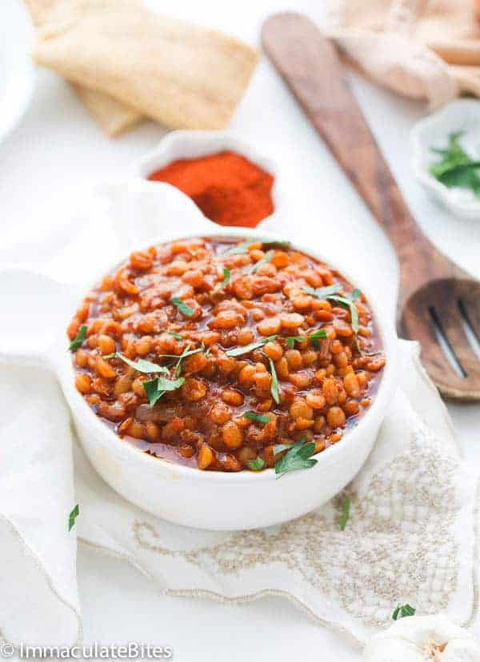
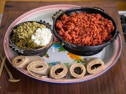
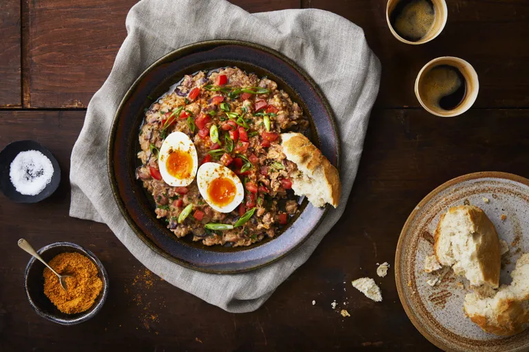

Select from a variety of recipes of your choice.
 ZIGNI RECIPE Zigni is a delicious spicy & aromatic stew made with berbere seasoning. This recipe shows how to prepare it using poultry, beef, lamb or goat meat. |
 SHIRO RECIPE This silky vegan Ethiopian Shiro Wot is so simple to make. It's also intensely aromatic and one of the most delicious chickpea stews ever! A homemade berbere spice blend and vegan niter kibbeh add amazing flavor. |
|  LENTIL RECIPE Ethiopian Lentil Stew is a deliciously healthy and spicy vegetarian lentil recipe with homemade berbere spice, spiced butter, and satisfying lentils. Every spoonful of this delectable meal will have you sighing in pure delight. And you wont even miss the meat! |
 TIBS RECIPE The sauce in this dish gets its kick from berbere, an Ethiopian chile powder fragrant with cardamom, fenugreek, and clove. Use it once and you'll see why a good chunk of Ethiopian cuisine is built on it. |
|  KITFO RECIPE This Ethiopian beef tartare recipe features high-quality steak seasoned with bold spices for a delicious dish that pairs well with nearly any sides! Enjoy raw or quickly sear to serve as a meal that everyone will love to share around the dinner table. |
FITFIT RECIPE This Ethiopian beef tartare recipe features high-quality steak seasoned with bold spices for a delicious dish that pairs well with nearly any sides! Enjoy raw or quickly sear to serve as a meal that everyone will love to share around the dinner table. |
 DORO RECIPE There is a reason why Doro Wat is the national dish of Ethiopia and one of the most famous of all African dishes its fabulous! This authentic Doro Wat recipe captures the very best of Ethiopian cooking! |
 KULWA RECIPE Fast, fresh, simple and delicious, kulwha is an Eritrean lamb stir-fry that uses the spiced ghee (clarified butter) called nitr kibbeh |
|  FUL RECIPE This Ethiopian ful medames recipe makes a superb, spicy breakfast, served with boiled eggs and crusty white rolls. Be sparing with the mitmita before serving, adding more later if you'd like to increase the heat it packs a real punch thanks to the bird's eye chillies. |
FRITATA RECIPE Frittatas come together so easily. With just a few ingredients and a pan, you'll get a breakfast worth slicing into. This Frittata Recipe is so versatile with all kinds of variations. |